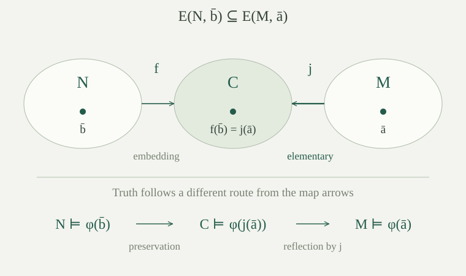

A substructure can lose witnesses, while an extension can acquire new ones. The preservation rules consequently send universal truth down to substructures and existential truth up to extensions. We now ask for converses: if a first-order property always survives in one of these directions, must it have the corresponding quantifier shape?
Fix an arbitrary set-sized first-order language \(L\) with equality. All structures and all substructures considered here are nonempty. We work in classical set theory with choice. An extension means an ordinary substructure inclusion \(M\subseteq N\), not necessarily an elementary inclusion.
A theory \(T\) is preserved under substructures if every nonempty substructure of every model of \(T\) is again a model of \(T\). A formula \(\varphi(\bar x)\) is preserved under extensions between models of \(T\) if, whenever \(M\subseteq N\) and both structures model \(T\),
for every tuple \(\bar a\) from \(M\). The empty theory imposes no restriction on either structure.
Equivalently, use embeddings \(f:M\hookrightarrow N\) and replace the conclusion by \(N\models\varphi[f(\bar a)]\). Indeed, an embedding is an isomorphism onto its image, which is a substructure; isomorphism invariance gives the equivalence. We will use this form when diagrams produce embedded copies.
Recall that a universal formula has the form \(\forall\bar y\,\theta(\bar x,\bar y)\), and an existential formula has the form \(\exists\bar y\,\theta(\bar x,\bar y)\), where \(\theta\) is quantifier-free. The quantified tuple can be empty. In particular, \(\top\) and \(\bot\) belong to both classes. A universal axiomatization of \(T\) is a set \(U\) of universal sentences with exactly the same nonempty models as \(T\).
Two formulas are equivalent modulo \(T\) if they have the same truth value at every tuple in every model of \(T\). We write this as
This asks for a new description of the same property. It does not assert that the original written formula already has the desired shape.
Existential formulas are closed under finite conjunction and finite disjunction, up to logical equivalence. Rename their bound variables to disjoint fresh tuples. For example,
The analogous disjunction identity is valid over nonempty domains: a witness tuple for the true disjunct can be supplemented by arbitrary values for the other tuple. The matrices stay quantifier-free. Iterating gives the finite cases, with empty conjunction \(\top\) and empty disjunction \(\bot\). These are instances of the quantifier-moving identities.
If \(T\) has a universal axiomatization, then it is preserved under nonempty substructures. If \(\varphi\) is equivalent modulo \(T\) to an existential formula, then \(\varphi\) is preserved under extensions between models of \(T\).
For the first assertion, let \(M\models T\), let \(A\subseteq M\) be nonempty, and choose a universal axiomatization \(U\). Every sentence of \(U\) passes from \(M\) to \(A\) by universal preservation. Thus \(A\models U\), hence \(A\models T\).
For the second, write \(\psi\) for the equivalent existential formula. If \(M\subseteq N\) are models of \(T\) and \(M\models\varphi[\bar a]\), equivalence gives \(M\models\psi[\bar a]\). Its witnesses remain in \(N\), and its quantifier-free matrix has the same truth value there. Hence \(N\models\psi[\bar a]\), and equivalence in \(N\) gives \(N\models\varphi[\bar a]\).
Define the universal part of \(T\) by
Every model of \(T\) satisfies \(T_{\forall}\). The difficult direction is whether those universal consequences already describe all models of \(T\). The signed diagram gives a useful intermediate conclusion.
For a nonempty \(L\)-structure \(M\), the following are equivalent: \(M\models T_{\forall}\); and there are a model \(N\models T\) and an embedding \(M\hookrightarrow N\).
An embedding identifies \(M\) with a substructure of \(N\). Universal consequences of \(T\) hold in \(N\), pass down to that image, and then hold in \(M\) by isomorphism invariance.
Conversely, suppose \(M\models T_{\forall}\). In the language \(L(M)\), consider
Here \(T\) is carried into the expanded language, and \(\operatorname{Diag}(M)\) is the signed atomic diagram, containing true atomic sentences and true negated atomic sentences. Suppose the displayed theory were unsatisfiable. By compactness for arbitrary languages, already \(T\) together with finitely many diagram sentences would be unsatisfiable. Conjoin those sentences into a quantifier-free sentence \(\delta(c_{a_0},\ldots,c_{a_{r-1}})\), listing all the finitely many names it uses. Replace the distinct names by distinct variables to obtain \(\delta(\bar y)\).
No model of \(T\) can satisfy \(\delta\) at any tuple: that tuple could interpret the fresh names and give a model of the supposedly unsatisfiable finite fragment. Therefore
This is a universal consequence of \(T\). But \(M\models\delta[\bar a]\), since each chosen diagram sentence is true in the canonical expansion of \(M\). This contradicts \(M\models T_{\forall}\). Empty conjunctions and empty name lists cause no exception: their matrices are still quantifier-free.
Thus the expanded theory has a nonempty model \(N^*\). Its reduct models \(T\), and the signed diagram lemma supplies the embedding, sending \(a\) to \(c_a^{N^*}\).
The expanded language can be uncountable even when \(L\) is countable, because it names every element of \(M\). This is why the arbitrary-language version of compactness is used.
For the application to comparing two theories by embeddings, see the universal parts of companion theories.
A first-order theory \(T\) is preserved under nonempty substructures if and only if it has a universal axiomatization. When this holds, its universal part \(T_{\forall}\) is such an axiomatization.
The reverse implication was proved in . For the forward implication, every \(T\)-model satisfies \(T_{\forall}\). If \(M\models T_{\forall}\), embeds \(M\) into some \(N\models T\). Its image is a nonempty substructure, so preservation makes the image a model of \(T\). Isomorphism invariance makes \(M\) a model of \(T\) as well. Thus \(T\) and \(T_{\forall}\) have the same models.
The theorem concerns classes already given by first-order theories. Closure under substructures alone does not make an arbitrary class axiomatizable.
In the language of equality alone, which of these classes has a universal axiomatization: structures with at most \(n\) elements, structures with exactly \(n\) elements, and all finite nonempty structures? Assume \(n\ge1\).
The first class is described by the single universal sentence
It says that no \(n+1\) elements are all distinct. One may instead list all pairs \(i\ne j\): each unordered pair is then listed twice, and symmetry of equality and repetition of a disjunct do not change the truth value. Exactly one element is described by \(\forall x\,\forall y\;(x=y)\), using our nonempty-domain convention. For \(n>1\), the exactly-\(n\) class is not closed under nonempty substructures: any singleton subset of an \(n\)-element equality structure is a substructure outside the class. The theorem rules out a universal axiomatization, although a first-order sentence does axiomatize exactly \(n\) elements.
The class of all finite nonempty equality structures is closed under nonempty substructures. It nevertheless has no first-order axiomatization. If \(T\) axiomatized it, add the sentences requiring at least \(k\) elements, one for each \(k\). Each finite fragment holds in a sufficiently large finite model of \(T\). Compactness would give an infinite model of \(T\), a contradiction. This explains the first-order hypothesis in the theorem.
For a structure \(M\) and a finite tuple \(\bar a\) with variable list \(\bar x\), define its existential information to be
This set records all assertions about \(\bar a\) supported by finitely many witnesses and a quantifier-free matrix. Variables in \(\bar x\) may be unused. In particular, it records all true literals about the tuple, since a literal is existential with an empty quantifier block.
The inclusion \(E(N,\bar b)\subseteq E(M,\bar a)\) will allow us to place an embedded copy of \(N\) beside an elementary copy of \(M\), identifying their indicated tuples.
This is the existential part of the complete type of the tuple.
Let \(M,N\) be nonempty \(L\)-structures and \(\bar a,\bar b\) tuples of the same finite length. If \(E(N,\bar b)\subseteq E(M,\bar a)\), then there are a structure \(C\), an elementary embedding \(j:M\to C\), and an embedding \(f:N\hookrightarrow C\) such that \(f(b_i)=j(a_i)\) for every coordinate \(i\).
Use disjoint families of fresh names \(c_m\) for \(M\) and \(d_n\) for \(N\), even if the original domains overlap. Form the theory
To check finite satisfiability, retain any finitely many sentences of the elementary diagram and signed diagram, and, if necessary, include all the finitely many displayed tuple equations. Conjoin the selected signed diagram sentences into a quantifier-free formula \(\delta\). Replace the \(N\)-names belonging to the tuple \(\bar b\) by their corresponding variables \(\bar x\), and all other names that occur by distinct variables \(\bar y\).
If a value occurs more than once in \(\bar b\), use one chosen coordinate for its name and conjoin the equalities between all coordinates with that same value. The resulting existential formula \(\exists\bar y\,\delta'(\bar x,\bar y)\) is true in \(N\) at \(\bar b\). By the assumed inclusion it is true in \(M\) at \(\bar a\). Choose its witnesses in \(M\).
Expand \(M\) by interpreting each \(c_m\) as \(m\), every tuple name \(d_{b_i}\) as \(a_i\), and the other finitely many mentioned \(d\)-names by those witnesses. The coordinate equalities make the tuple-name interpretations well-defined. Interpret any remaining names arbitrarily, using nonemptiness. Every selected elementary-diagram sentence is true in the canonical \(M\)-expansion; the witnesses satisfy the selected signed-diagram sentences and the tuple equations. Thus every finite fragment is satisfiable.
Arbitrary-language compactness gives a model of the whole theory. Let \(C\) be its \(L\)-reduct, and set \(j(m)=c_m^C\) and \(f(n)=d_n^C\), reading the constants in that expanded model. The elementary diagram lemma makes \(j\) elementary, and the signed diagram lemma makes \(f\) an embedding. The added equations give the stated identities at the tuples.
Suppose \(\varphi(\bar x)\) is preserved under extensions between models of \(T\). Let \(\Gamma(\bar x)\) be all its existential consequences modulo \(T\):
If \(M\models T\) and \(M\models\psi[\bar a]\) for every \(\psi\in\Gamma\), then \(M\models\varphi[\bar a]\).
Adjoin a fresh tuple of constants \(\bar c\), and consider
This theory is satisfiable. Otherwise compactness would give finitely many excluded formulas \(\psi_1,\ldots,\psi_r\) such that
The disjunction is equivalent to an existential formula, including \(\bot\) when \(r=0\). That formula belongs to \(\Gamma\), so it is true at \(\bar a\) in \(M\). But each disjunct was selected because it is false there, a contradiction.
Choose a model \(N^*\) of the displayed theory. Write \(N\) for its \(L\)-reduct and put \(\bar b=\bar c^{N^*}\). Then \(N\models T\) and \(N\models\varphi[\bar b]\). Moreover \(E(N,\bar b)\subseteq E(M,\bar a)\): an existential formula false at \(\bar a\) was explicitly forbidden at \(\bar b\).
Apply to obtain \(j:M\to C\) elementary and \(f:N\hookrightarrow C\) with \(f(\bar b)=j(\bar a)\). Elementarity makes \(C\) a model of \(T\), since \(M\models T\). Preservation along the embedding \(f\) gives \(C\models\varphi[j(\bar a)]\). Elementarity of \(j\) now reflects this truth to \(M\models\varphi[\bar a]\).

A first-order formula \(\varphi(\bar x)\) is preserved under extensions between models of \(T\) if and only if there is an existential formula \(\psi(\bar x)\) equivalent to \(\varphi\) modulo \(T\).
The reverse implication is . For the forward implication, let \(\Gamma\) be the existential consequences in . That lemma says that \(T\) together with all formulas in \(\Gamma\) implies \(\varphi\), at every tuple. Treating the free variables as fresh constants, compactness gives finitely many \(\psi_1,\ldots,\psi_r\in\Gamma\) such that
Conversely, \(\varphi\) implies every \(\psi_i\) modulo \(T\) by their definition. Their conjunction, written in existential form by , is therefore the required \(\psi\). If none is needed, use \(\top\). An inconsistent \(T\) also causes no exception, because every equivalence modulo it is vacuous.
Taking \(T=\varnothing\) gives equivalence in all nonempty structures. Negating gives the dual formula theorem: \(\varphi\) passes down to substructures between models of \(T\) exactly when it is equivalent modulo \(T\) to a universal formula. Indeed, downward preservation of \(\varphi\) is upward preservation of \(\neg\varphi\), and the negation of an existential formula is universal after quantifier duality.
Robinson's model-completeness test applies these relative preservation results to embeddings between models of one theory.
The next quantifier pattern is characterized by preservation under ordinary increasing unions: universal choices followed by existential witnesses describe exactly the inductive theories.
For maps that may merge points and preserve relations only forward, homomorphism preservation characterizes existential-positive sentences.
Let \(T\) be the theory of strict linear orders without a greatest element. Is the formula \(\exists y\,(x<y)\) equivalent modulo \(T\) to a universal formula? Does that equivalence hold in every strict linear order?
Modulo \(T\), the formula is equivalent to \(\top\), which is quantifier-free and hence universal. Every element of every \(T\)-model has a larger element. In particular, it passes down between substructures that both model \(T\).
The singleton strict order is a substructure of the two-element order \(0<1\). At its sole element \(0\), the formula is false in the singleton and true in the two-element order. A universal formula could not behave this way under passage down to that singleton. Therefore no equivalence to a universal formula holds throughout the class of all strict linear orders. Neither finite order is a model of \(T\); the relative theorem did not promise preservation for them.
In the language of equality alone, infinitude is preserved under extensions. Could one existential sentence define it?
No. Suppose \(\exists\bar y\,\theta(\bar y)\) were true in an infinite equality structure. Choose a witness tuple. Its entries lie in a finite nonempty subset: if the tuple is empty, choose any one element instead. Every nonempty subset is a substructure in this language. Quantifier-free agreement makes \(\theta\) true at the same tuple in that finite substructure, so the existential sentence holds there too.
There is no conflict with : its input is a single first-order formula, and infinitude has no such defining sentence. If a sentence defined infinitude, its negation would axiomatize all finite nonempty structures, contradicting the compactness argument above. It does have an infinite existential axiomatization, namely the sentences requiring at least \(k\) distinct elements for each \(k\). The theorem does not turn an arbitrary collection of conditions into one formula.
The witness argument uses the absence of function symbols. In a language with functions, closing even one witness under the functions can produce an infinite substructure.